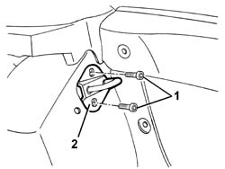
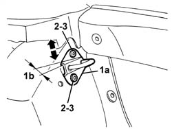

7050A45 STRIKER FOR ATTACHMENT/RELEASE DEVICE for .one( SPLIT rear), seat BACKREST left or right - R.R.
- Path
- Procedures > 70 FITTINGS > 7050 REAR SEATS > 7050A rear seat assembly > 7050A45 STRIKER FOR ATTACHMENT/RELEASE DEVICE for .one( SPLIT rear), seat BACKREST left or right - R.R.
- Kind
- repair procedure (removal / refitting; the operation number is the code)
- Applies to
- all engines; all production periods
- Interactive page
- https://sloeber94.github.io/elrnDB-a147/en/#/3025885
Applies to: all engines; all production periods
 Removing
Removing
 Refitting
RefittingLower the rear seat backrest.
1. Unscrew the bolts
2. Remove the striker.

Applies to: all engines; all production periods
Refitting
RemovingCheck the striker is intact and undamaged.
1. Postion the striker (1a) with the thickest side (1b) towards the car interior.
2. Do up the bolts without tighening so the striker can move. Permitted adjustment movements are indicated by arrows.
Do up the squab so that the striker is centred on the lock.
Release and lower the squab.
3. Tighten the striker bolts.

Applies to: all engines; all production periods
Check that the squab is properly engaged.
Check that the central rear seat belt is working properly (only for right squab).
Topics that link to this page (7)
- 3340A34 rpm sensor (one) of one l/h or r/h rear wheel - r+r
- 3340A35 left rear wheel rpm sensor - r r
- 3340A37 right rear wheel rpm sensor - r r
- 5505C28 intergrated engine bay and abs system wiring - r r
- 5505C41 cabin wiring - r r
- 7040B06 side trim (one) lh or rh, load compartment/load platform - r r
- 7040H50 rear panel - r r